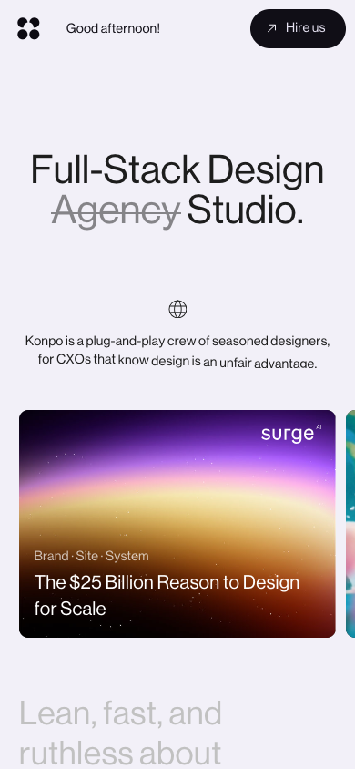
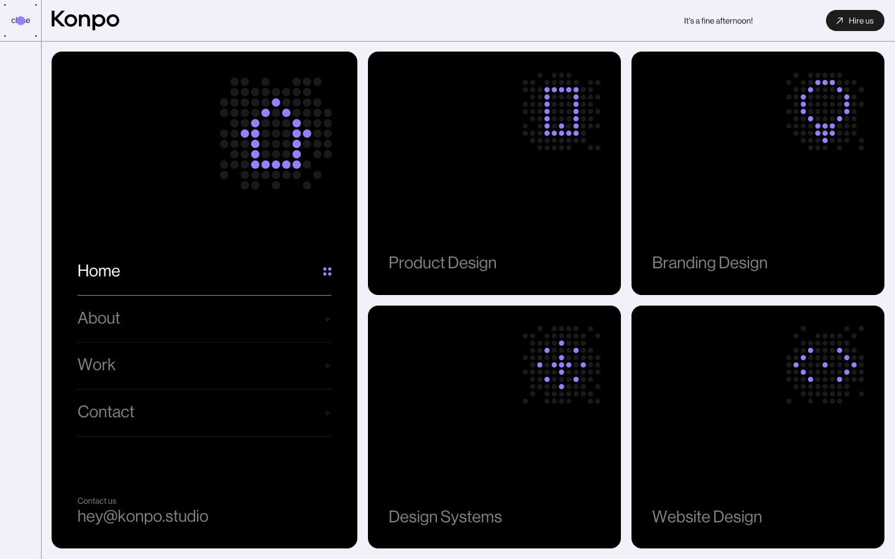
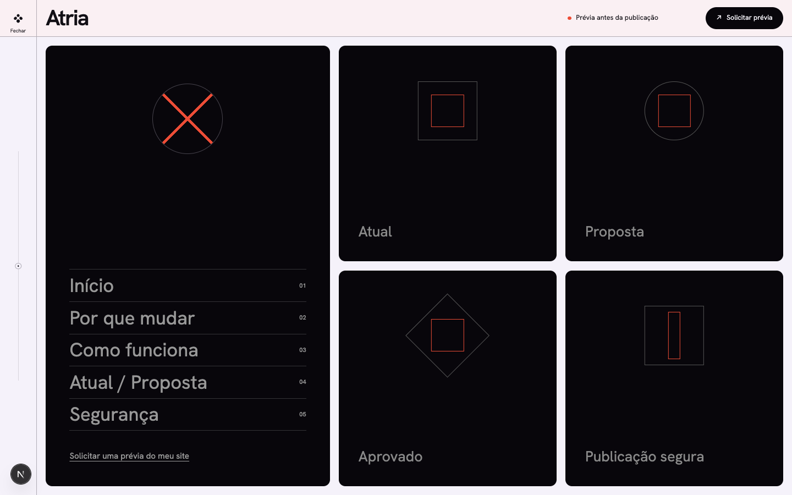

Prova de paridade estrutural — antes da landing completa
Desktop · dobra inicial · 1440 × 900
Referência Konpo
Reconstrução Atria, prova v2
Desktop · sobreposição a 50%
Mobile · dobra inicial · 390 × 844
Referência Konpo

Reconstrução Atria, prova v2
Menu · 1440 × 900
Referência Konpo

Reconstrução Atria
